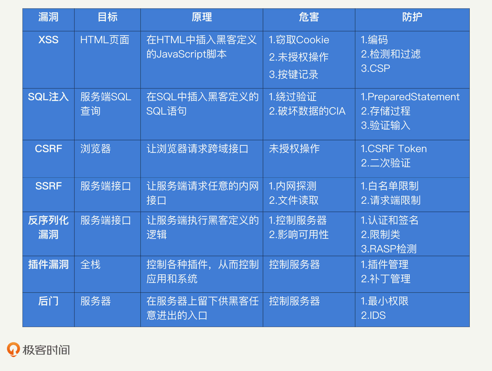

- 00 开篇词 别说你没被安全困扰过.md
- 01 安全的本质：数据被窃取后，你能意识到问题来源吗？.md
- 02 安全原则：我们应该如何上手解决安全问题？.md
- 03 密码学基础：如何让你的密码变得“不可见”？.md
- 04 身份认证：除了账号密码，我们还能怎么做身份认证？.md
- 05 访问控制：如何选取一个合适的数据保护方案？.md
- 06 XSS：当你“被发送”了一条微博时，到底发生了什么？.md
- 07 SQL注入：明明设置了强密码，为什么还会被别人登录？.md
- 08 CSRF_SSRF：为什么避免了XSS，还是“被发送”了一条微博？.md
- 09 反序列化漏洞：使用了编译型语言，为什么还是会被注入？.md
- 10 信息泄露：为什么黑客会知道你的代码逻辑？.md
- 11 插件漏洞：我的代码看起来很安全，为什么还会出现漏洞？.md
- 13 Linux系统安全：多人共用服务器，如何防止别人干“坏事”？.md
- 14 网络安全：和别人共用Wi-Fi时，你的信息会被窃取吗？.md
- 15 Docker安全：在虚拟的环境中，就不用考虑安全了吗？.md
- 16 数据库安全：数据库中的数据是如何被黑客拖取的？.md
- 17 分布式安全：上百个分布式节点，不会出现“内奸”吗？.md
- 18 安全标准和框架：怎样依“葫芦”画出好“瓢”？.md
- 19 防火墙：如何和黑客“划清界限”？.md
- 20 WAF：如何为漏洞百出的Web应用保驾护航？.md
- 21 IDS：当黑客绕过了防火墙，你该如何发现？.md
- 22 RASP：写规则写得烦了？尝试一下更底层的IDS.md
- 23 SIEM：一个人管理好几个安全工具，如何高效运营？.md
- 24 SDL：怎样才能写出更“安全”的代码？.md
- 25 业务安全体系：对比基础安全，业务安全有哪些不同？.md
- 26 产品安全方案：如何降低业务对黑灰产的诱惑？.md
- 27 风控系统：如何从海量业务数据中，挖掘黑灰产？.md
- 28 机器学习：如何教会机器识别黑灰产？.md
- 29 设备指纹：面对各种虚拟设备，如何进行对抗？.md
- 30 安全运营：“黑灰产”打了又来，如何正确处置？.md
- 加餐1 数据安全：如何防止内部员工泄露商业机密？.md
- 加餐2 前端安全：如何打造一个可信的前端环境？.md
- 加餐3 职业发展：应聘安全工程师，我需要注意什么？.md
- 加餐4 个人成长：学习安全，哪些资源我必须要知道？.md
- 加餐5 安全新技术：IoT、IPv6、区块链中的安全新问题.md
- 模块串讲（一）Web安全：如何评估用户数据和资产数据面临的威胁？.md
- 模块串讲（三）安全防御工具：如何选择和规划公司的安全防御体系？.md
- 模块串讲（二）Linux系统和应用安全：如何大范围提高平台安全性？.md
- 结束语 在与黑客的战役中，我们都是盟友！.md
模块串讲（一）Web安全：如何评估用户数据和资产数据面临的威胁？
你好，我是何为舟。“Web安全”模块已经结束了，今天我会通过一篇串讲，带你回顾这一模块的知识，帮你复习巩固，更好地掌握和应用这些内容。
有同学留言说：“老师，讲了这么多漏洞的防护知识，有没有什么好的记忆方法呀？”首先，我们要明确一点，不管学什么知识，想要学好，在前期，一定需要时常复习来加深记忆。在此基础上，我们才能深刻理解和熟练应用这些知识。
那你可能要说了，怎么才能“记住”这些知识呢？我这里有一个我自己非常常用的、好的记忆方法，那就是“体系化的记忆”。怎么个体系化呢？说白了，就是每学完一块内容，通过自己的理解把相关的内容串联在一起。这也就是我们常说的，把知识变成自己的东西，长久下来，你就可以形成自己的知识体系了。
那放到我们这个“Web安全”模块中，我说过，安全落地的第一步是进行威胁评估，而威胁评估又可以分为：识别数据、识别攻击和识别漏洞。所以，今天我就基于比较常见的两种应用场景，通过威胁评估的方式，带你系统地复习我们学过的Web安全知识。
用户数据的威胁评估
假设，你正在为公司设计安全体系，首先要对用户数据进行威胁评估。以微博的用户数据为例，这些数据就包括：个人信息、博文信息以及关注互动信息等等。正常情况下，用户需要登录之后才能获取并修改自己的用户数据。那为了获取这些用户数据，黑客常常会通过盗取用户身份来进行未授权的操作。
我们之前讲过，黑客可以通过尝试弱密码或者通过社工手段盗取用户的密码。这种攻击漏洞出现的原因，主要是用户在密码保管上的安全意识薄弱。因此，我们需要通过管理机制（比如安全培训）和技术手段（比如限制密码强度），提升用户的安全意识，教用户如何更好地保管密码。
除此之外，黑客还可以通过一些Web漏洞，在不知道用户密码的情况，模拟用户进行未授权的操作。可能的Web漏洞我们讲过3种。你可以先自己想想，看能想起来几种。如果想不起来，再看我下面的内容。
第1个是XSS漏洞。通过XSS漏洞，黑客可以在Web应用中嵌入自己的JavaScript脚本，从而篡改Web应用在用户浏览器上的行为。通过XSS，黑客一方面可以模拟用户，直接在Web应用中进行发博关注等互动行为；另一方面，也可以通过JavaScript脚本，窃取到用户的Cookie信息。窃取到Cookie之后，黑客就能够在不知道密码的情况下，绕过登录认证环节，直接获得用户身份。
点击图片即可复习“XSS”章节
第二个是SQL注入漏洞。通过SQL注入漏洞，黑客可以利用所谓的“万能密码”，直接对登录环节进行破解。通过“万能密码”，黑客可以将原本的登录认证SQL语句进行篡改，使其变成一个恒为真的表达式，让应用误以为黑客输入的是正确的用户名和密码。这样，黑客就能破解登录认证环节，直接获得用户身份。
点击图片即可复习“SQL注入”章节
最后一个是CSRF漏洞。通过CSRF漏洞，黑客能够直接对用户的浏览器进行控制。当黑客在自己的网页中，向其他网页发起跨域请求的时候，浏览器会自动带上对应网页的Cookie等信息。因此只要用户之前进行过认证，并且已经将登录凭证保存在浏览器中，黑客就能以用户的身份发起未授权的操作请求。
点击图片即可复习“CSRF和SSRF”章节
我们来总结一下这个过程。我们正在为公司设计安全体系进行威胁评估，首先关注的数据通常是用户数据，而为了破坏用户数据的CIA，黑客会盗取用户身份。盗取用户身份的安全漏洞，主要有用户自身的密码保管不当和Web应用的漏洞。这其中，Web应用的漏洞可能是XSS、SQL注入和CSRF。
资产数据的威胁评估
讲完了用户数据的威胁评估，我们再以银行为例，说一说资产数据的威胁评估。因为金融行业相对更关注金钱相关的数据，所以，在做威胁评估时，最可能识别到的数据就是资产数据。这些资产数据中包括余额和交易记录等。因为资产数据保存在内部的数据库中，所以，黑客会通过控制内网服务器这样的攻击手段，窃取数据库中的信息。你可以先想一想，我们讲过的攻击方式，哪些可以控制内网服务器。
我们先来看第1种：利用SSRF漏洞攻击。通过SSRF漏洞，黑客可以控制服务器，向内网发起任意的网络请求。因此，如果某个内网的Web服务没有做好认证，黑客就可以获取到Web服务内的数据。除此之外，通过对一些特定端口或者协议的访问，黑客还能够获取其他的数据。比如，通过访问MySQL的3306端口，黑客能够知道内网的整体网络结构；或者通过file://协议，黑客可以直接读取服务器本地的文件。
第2种是利用反序列化漏洞攻击。通过反序列化漏洞，黑客可以控制应用的服务端，使得服务端执行黑客所定义的逻辑。更进一步，比如在Java中，黑客指定应用执行Runtime.exec()，就能够让应用执行任意的系统命令了。这样一来，黑客就能够实现从控制应用到控制服务器的权限提升了。
点击图片即可复习“反序列化漏洞”章节
第3种是利用插件漏洞攻击。除了应用开发的代码中可能出现漏洞，应用所依赖或者使用的插件本身，也有可能出现各种安全漏洞。比如，经典的Web框架Structs，就出现过命令执行的漏洞。不管你的代码如何安全，只要你使用了Structs，黑客就能通过Structs来控制你的服务器。
点击图片即可复习“插件漏洞”章节
我们还要注意的就是“后门”。除了通过前面这3种漏洞攻击控制服务器之外，黑客为了能够对服务器实现长久的控制，会在服务器中留下“后门”。这样一来，黑客想要再次使用服务器的时候，只需要直接通过“后门”进入即可。“后门”通常会以木马、Rootkit和WebShell的形式出现在服务器中，并伴随定时任务、开机启动或者利用常驻进程在服务器中持续运行。
点击图片即可复习“权限提升和持久化”章节
通过威胁评估我们知道，银行的关键数据为资产数据，而为了破坏资产数据的CIA，黑客会通过控制内网服务器的方式来发起攻击。接着，我们分析出在Web安全中，黑客可以利用的漏洞有SSRF、反序列化漏洞和插件漏洞，以及黑客还会在服务器中留下一个“后门”，实现对服务器的长期掌控。
认证和授权的安全防护
在进行完威胁评估之后，我们知道了应用可能会面临的风险和漏洞有哪些。下一步，我们就要针对这些漏洞进行防护了。
实际上，上面这些Web漏洞都是针对认证这一个环节发起的攻击，也就是说，通过各种漏洞，黑客可以直接绕过认证环节，或者通过异常的输入破解认证，再或是以操控他人的形式来窃取身份信息。因此，对于这些漏洞的防护，我们最有效的防护手段还是加强检测，避免这些漏洞的出现，以此来保障认证环节的安全性。你可以回忆一下，我们讲过的检测手段都有哪些。
主要的防护手段可以分为3种。
第1种是检测和过滤。对于应用来说，一切由用户生成的信息，都是不可信的。因此，我们要对这些信息进行检测和过滤。比如，在页面渲染输出的时候，对信息进行编码；在用户输入的时候，对关键词进行过滤；对用户的输入进行白名单的限制等。通过这些方法，我们就能够对基于XSS、SQL注入和SSRF等漏洞的攻击进行一定的防护。
第2种是加强认证。大多数情况下，为了用户体验，应用会在用户进行一次登录后，在前端对用户的身份信息进行保存。这样，用户在进行后续操作时就不需要再次登录认证了。但是，这种设计，会对应用的安全性造成一定的影响。因为黑客可能控制用户的前端，来仿冒用户进行操作。为此，对于某些关键性的操作（比如转账等），应用需要通过一次性Token和安全性更高的支付密码等手段进行二次认证，来保障操作的可信。
第3种是补丁管理。我们之前讲过“0 Day”漏洞，黑客通过这个漏洞能够造成的危害更大，而且黑客会比你更早地知道漏洞的存在。那像这样的插件漏洞，其实具备和应用一样甚至更高的权限，但是插件本身又不受开发控制。所以，一旦插件出现漏洞，就极容易成为黑客的目标。为了避免应用受到各类插件漏洞的影响，我们需要使用各种自动化的插件管理工具，对公开的插件漏洞进行监控，及时更新补丁。
我们可以通过这3种防护手段加强认证环节的安全性。除此之外，我们还要在授权和审计阶段加入检测，来识别异常的身份认证，尽可能地提高应用的安全性。比较典型的方式有3种。
第1种最小权限原则。在任何时候，最小权限原则一定是提升系统安全性的最佳实践方案。通过给各类应用和插件配置最小的权限，虽然不能够对异常的身份认证进行识别。但是，通过最小权限原则，我们能够在最大程度上，减少黑客在窃取到用户身份后产生的危害，也就保护了数据的安全性。
第2种是WAF（Web Application Firewall，网站应用级入侵防御系统）。WAF的主要作用，就是对用户的输入进行检测，拦截可疑的输入。检测原理就是，普通用户在应用中的输入可预测，基本不会去输入类似单引号这样可能对应用功能产生影响的输入。因此，我们只要对各类攻击类型的输入进行分析，提取出来其特征，就可以准确地识别出黑客的攻击行为并进行拦截了。关于WAF，我会在后面的课程中详细讲解，这里就不再深入了。
第3种是IDS（Intrusion Detection System，入侵检测系统）。当黑客进入内网或者控制了服务器之后，其行为往往也会区别于内部员工。比如，黑客可能会对内网发起探测扫描，而内部员工只会按照工作需要访问特定的地址。因此，我们可以对内网和服务器中的各类行为进行收集，对异常的行为进行“挖掘”，从而对已发生的入侵进行检测和告警。这就是IDS。
总结
今天，我从互联网应用的用户数据的威胁评估，讲到金融行业的资产数据的威胁评估，最后讲到在威胁评估完成后，我们要从认证、授权和审计上有针对性地进行防护。只要你真正用好这几种防护，就能避免大部分的Web安全问题了。
最后，我把“Web安全”涉及的主要内容梳理成了一张表格，你可以利用它来及时回顾。

思考题
在文章开头，我提到了“体系化的记忆”这样一种学习方法。今天，我用我的思路带着你复习了一遍Web安全这一模块的核心知识，不知道你掌握得怎么样？你可以尝试用自己的思路，总结串联一下这一模块的内容，相信你一定会非常有收获。
欢迎留言和我分享你的思考和疑惑，也欢迎你把文章分享给你的朋友。我们下一讲再见！
© 2019 - 2023 Liangliang Lee. Powered by gin and hexo-theme-book.